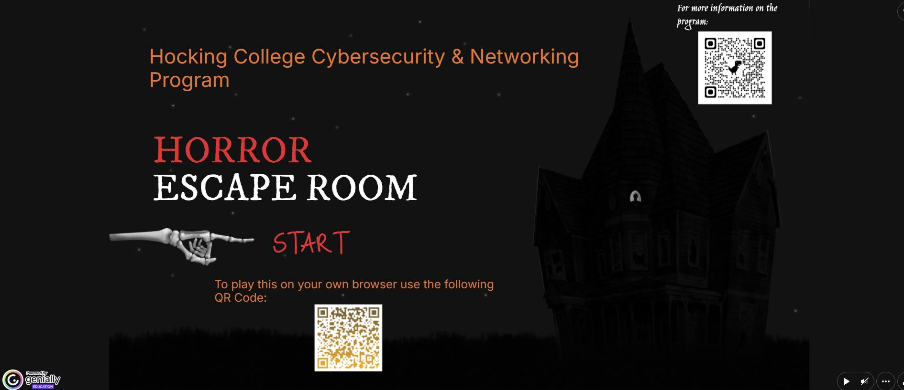

▶ Play escape room ↗ESCAPE ROOM · CAREER SHOWCASE 2024
Cyber Horror Escape Room
Enter a haunted house, collect missing objects, and solve cybersecurity challenges to help a trapped ghost recover its memories.
▶ Play the escape room ↗Explore a possible future. Solve a digital mystery. These games turn curiosity into choices, challenges, and discovery.
The Longest Saturday
 ▶ Enter the adventure Opens the live game ↗
▶ Enter the adventure Opens the live game ↗
Follow a choose-your-own-adventure story through Hocking County. About 12 big decisions and a surprise challenge reveal your career interests and connect them with Hocking College programs.
Designed for high school students, the experience brings the Holland career interest model (RIASEC) into a playful setting for exploring what could come next.
Respond to situations throughout the story.
See your career interest code take shape.
Find matching programs and use your results to start a conversation.
Launch the live game below, or open it in a new tab for more room. Sound and music controls are inside the game.
Explore, decode, and make safer choices in two cybersecurity puzzle experiences.

▶ Play escape room ↗Enter a haunted house, collect missing objects, and solve cybersecurity challenges to help a trapped ghost recover its memories.
▶ Play the escape room ↗ ▶ Start the quest ↗
▶ Start the quest ↗Follow the clues through a riddle forest. Decode hidden messages, question weak secrets, and choose a safer path toward the treasure.
▶ Play the cipher quest ↗Previews show the actual game opening screens. Both cybersecurity games open on Genially in a new tab.
Developed AI certificate and associate-degree proposals, syllabi, and instructional mapping alongside cybersecurity curriculum modernization. Program development is distinguished from the status of a future launch.
Developed a learning model using GitHub and Google Sites portfolios, hands-on assessments, and Sage, an AI instructional assistant integrated into coursework.
Designed a faculty-supervised model connecting student practicum and capstone work with municipal cybersecurity needs, including risk assessments, policy templates, and NIST CSF mapping.
Program design and pilot planning; this entry does not claim completed services for a specific number of communities.
These projects bring together technical practice, career exploration, and my ongoing focus on gamified cybersecurity and AI-supported learning.